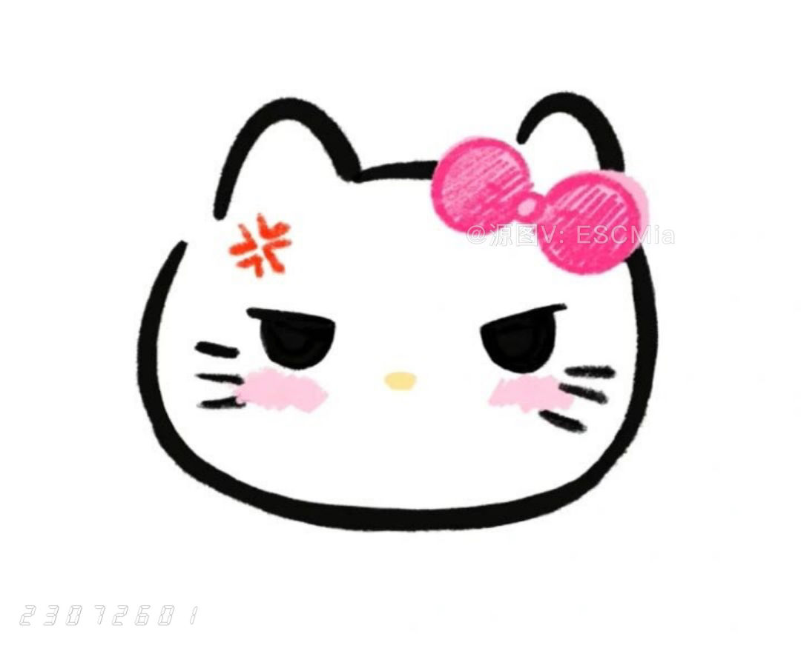

姓名: 谭怡曦
性别: 女
年龄: 22岁
民族: 汉
自我介绍
别误会 这不是我 这是南湘 她主修绘画雕塑 又有艺术气质又有美艳皮囊 是我心中色艺双馨的楷模
她呢 喜欢花漂亮的风景 而她自己同时也是许多男人眼里的漂亮风景 她的家庭不太富裕但美术学院却是一个类似钞票焚烧炉一样的地方
好吧,这也不是我,我没有这麼奢侈这是顾里 如你所见 她呢 是一个如假包换的富二代
我要不是已经认识她十几年 我也一定和普罗大众一样恨不得冲她脸上丢小笼包子 我确实也这麼干过 但她的脑子里却并不是只有奢侈品
她同时双修注册会计和国际金融 而且自学商法,业馀时间还是个倒爷 以前喜欢买卖黄金 最近在国际期货市场倒腾土豆和玉米
当然 这绝对不可能是我 她叫唐宛如 是国家二级羽毛球运动员 但她的梦想却是 成为玛丽莲梦露般的性感尤物
如你所见 她是一个总在不该淡定的场合特别淡定 在该淡定的场合特别不淡定的...少女
好啦 这才是我 没有南湘那么漂亮 没有顾里那么精致 但也没有唐宛如那么的over
我叫林萧 是上海万千女孩中最平凡的一个
自我介绍（正经版）
这才是真正的自我介绍，我叫谭怡曦，性别女，爱好吃瓜，发疯。拥有每个大学生都有的美好品质，容易死。
接下来的日子希望和大家好好相处
